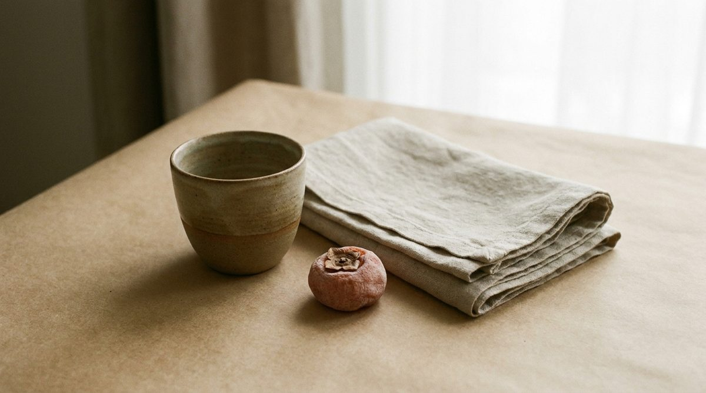
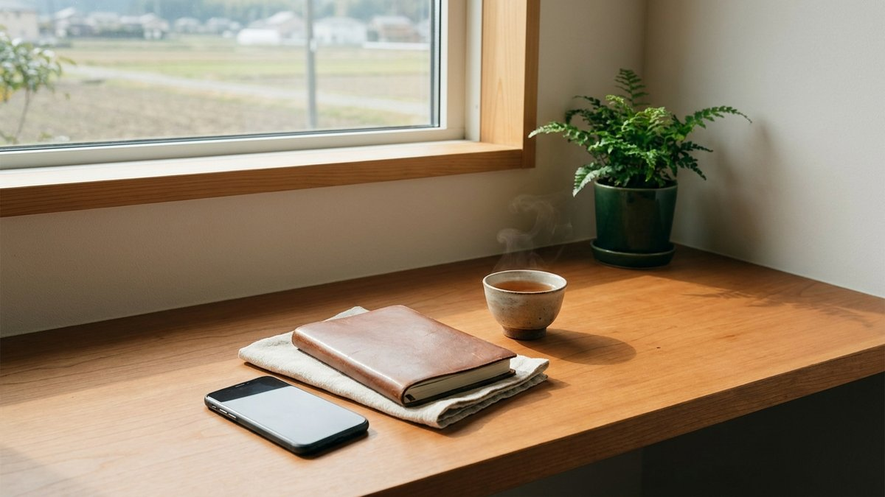

Lab — Web表現ずかん
Webの"しかけ"、ぜんぶ実演。
サイトで見かける「なんかかっこいい動き」。その正体を、実物で触って、名前を知れるページです。むずかしい言葉は使いません。このページ自体が、ぜんぶ実演でできています。
下にスクロールすると、ひとつずつ「しかけ」が出てきます。それぞれ 名前・ひとことで何か・実演・どんな時に効くか・重さやSEOへの影響 を、正直に並べました。最後に専門用語集と「テンプレとは何か」も置いています。
※このページのしかけは、スクロールするたび何度でも再生されます。
01 — いま体感中Smooth Scroll
なめらかスクロール
スクロールに"慣性"をつけて、ヌルッと滑らかに動かす。実はこのページ全体に、もう効いています。マウスホイールを少し回してみてください。
02Hover Interaction
触れると、線が引かれる。
カードにカーソルを乗せると、下線が左から伸び、矢印が動きます。——この3枚は、実は押すとそのまま各ページへ。
03Text Reveal
見出しが、下から
すっと立ち上がる。
画面に入ると、覆いの下から文字が現れます（上の見出しがそれです）。
04Mask Reveal + Zoom
写真が、開いて現れる。
マスク（覆い）が左から開いて写真が出ます。ホバーでゆっくり寄ります。
05Magnetic Button
ボタンが、指に吸い付く。
ボタンの近くにカーソルを寄せると、少し近づいてきます。押し心地のための"気持ちよさ"。
06Count Up
数字が、スルスル上がる。
画面に入ると 0 から目標値まで動きます。
07Animated Diagram (SVG)
3つが、1つに集まる。
線が描かれて、1点に収束します。「集約してととのえる」を図で。
08Parallax
2枚が、別の速さで動く。
スクロールで前後の写真がずれて動き、奥行きが出ます。

スクロールで奥行きが出る
09Sticky Pinning
見出しは止まったまま、
右側だけ進む。
02
まわす — 現場のAI集約・LINE業務集約。
10
押すと、フワッと切り替わる。
リンクを押した瞬間、画面が覆われて次ページへ。静的サイトでもできる、いま一番モダンな演出です。
11Before / After Slider
境目を、ドラッグで動かす。
中央のつまみを左右に動かすと、ビフォー／アフターが切り替わります。清掃や制作の「前と後」を見せるのにぴったり。

BeforeAfter
⟷
123D Tilt
カードが、立体に傾く。
カーソルの位置に合わせて、カードがわずかに3D回転します。
ととのえる屋
カーソルを乗せて動かしてみてください。奥行きが出ます。
13Typewriter
文字が、打たれていく。
1文字ずつ打ち込まれるように現れます（下の行・画面に入ると再生）。
14Marquee
言葉が、流れ続ける。
同じ言葉がゆっくり横に流れ続けます。
つくるまわすおしえるととのえるつくるまわすおしえるととのえる
15Scroll Color Shift
スクロールで、色が反転する。
この枠が画面の中央に来ると、明るい紙から夜の墨へ。通り過ぎれば、また紙へ戻ります。
Scene change
明るい紙から、夜の墨へ。
戻れば、また紙へ。
16Accordion
押すと、開いて閉じる。
たたんでおいて、必要な時だけ開く。場所を取らず、探しやすい（FAQの定番）。
ととのえる屋に頼めることは？
HP・LP制作、AI業務改善、totoline、清掃、ギター教室の5領域です。
相談だけでも大丈夫ですか？
はい。「何がなんだかわからない」だけでも構いません。
対応エリアは？
小諸・御代田・軽井沢を中心に長野県内。制作・AIは全国オンライン対応です。
UI部品 — よく使う道具
17Modal Dialog
押すと、まん中に浮かぶ。
ボタンを押すと背景がすっと暗くなり、中央に小窓が開きます。今の画面を保ったまま、要点だけに視線を集めたいときに。
18Tabs
1か所で、切り替える。
見出しを押すと、同じ場所で中身が入れ替わります。スクロール量を増やさずに、複数の情報を見せられます。
言葉を集約し、核だけ残したサイトを設計します。テンプレに頼らず、ブランドの空気ごと作ります。
現場の日報・シフト・請求を、写真とAIで軽くします。掃除の手は止めずに、事務だけ減らす。
続けたくなることを、いちばん大事に。初めての一本から、無理なく始められます。
19Toast
すっと出て、すっと消える。
ボタンを押すと、画面のすみに小さな知らせが現れ、数秒で自動的に消えます。「送信しました」のような、軽い合図に。
20Tooltip
触れると、そっと説明が出る。
言葉の上にカーソルを乗せる（スマホは押す）と、小さな吹き出しで補足が出ます。本文を汚さずに、注釈を足せます。
たとえば LLMOChatGPTなどのAIに、正しく引用・紹介してもらうための最適化。 という言葉。むずかしい用語に、こうして説明を添えられます。OGPSNSにURLを貼ったとき、タイトルや画像をきれいに見せる設定。 も同じ要領です。
コード・技術 — 制作者の手元
21Code Copy
ボタンひとつで、まるごとコピー。
コードや設定の右上のボタンを押すと、中身がそっくりコピーされます。読者が手で打ち写す手間を、まるごと消せます。
bash
npx create-totonoeru my-site
cd my-site
npm run dev
22Live Preview
数値を動かすと、その場で変わる。
下のつまみを動かすと、コードの数字と、右の見本が同時に変わります。「コードと結果」を並べて、仕組みをそのまま体感できます。
スクロール演出 — 第二集
23Horizontal Scroll
横に、すーっと流れる。
指やマウスで横にドラッグ（PCはホイールでも横に動きます）。場所を取らずに、たくさんのカードを並べられます。——この5枚は、押すとそのまま各ページへ。
24Scroll Snap
パシッと、1枚ずつ止まる。
下の枠の中を縦にスクロールすると、1枚ずつ吸い付くように止まります。最後の1枚は、そのまま相談の入口に。
25Reading Progress
どこまで読んだか、上の線でわかる。
ページのいちばん上に、細い進捗バーがもう出ています。スクロールすると、読み進んだぶんだけ伸びます（このページで実際に動いています）。
図解・質感 — 第二集
26Dark Mode Toggle
スイッチひとつで、夜になる。
下のスイッチを押すと、見本が「明るい紙」と「夜」で切り替わります。好みや時間帯に合わせて、目にやさしく。
明るい / 夜
Preview
同じ中身が、装いを変える。
色とコントラストだけを差し替えています。文字も構造もそのまま。だから検索やAIへの読まれ方は変わりません。
相談する →
27Syntax Highlight
コードに、色がつく。
キーワード・文字列・コメントを色分けすると、コードがぐっと読みやすくなります。技術記事や手引きの定番です。
javascript
// LINEの会話を、AIで台帳に集約する
async function totonoeru(message) {
const task = await ai.summarize(message)
return { title: "今日の記録", task }
}
実務でよく使う表現 — 第三集
28Step Form
質問を、1つずつ。
長い入力フォームも、1問ずつに分けると答えやすくなります。下のミニ相談で体感してみてください。最後は、そのまま本物の相談につながります。
29Card Flip
カードが、くるっと裏返る。
カーソルを乗せると裏面が現れます（スマホでは押すと各ページへ）。表に名前、裏に中身と入口を。
30Gallery + Lightbox
並べて見せて、押すと開く。
写真をきれいに並べ、押すと大きく開きます（ライトボックス）。実績や事例を、作品のように見せるのに。
31Progress Ring
円が、ぐるりと満ちる。
画面に入ると、円がゼロから描かれます。割合や進み具合を、ひと目で。（左は実際の進み具合、右は実例です）
0%
washdeli 手作業の削減（60分→0分）
32Code Tabs
コードを、タブで切り替える。
HTML・CSS・JS など、複数のファイルを1か所でタブ切り替え。手順や作例を、すっきり見せられます。
<!-- ヒーロー -->
<section class="hero">
<h1>ととのえる屋</h1>
<a href="/web/">相談する</a>
</section>
.hero {
padding: 96px 44px;
text-align: center;
}
// 相談ボタンの計測
document.querySelector(".hero a")
.addEventListener("click", () => {
track("soudan")
})
情報を整理する表現 — 第四集
33Timeline
流れが、縦につながる。
出来事や手順を、時系列で縦に並べます。制作の進み方を、ひと目で。画面に入ると順に現れます。
01相談
何がなんだか分からない、でも大丈夫。まず話を聞きます。
34Tag Filter
タグで、ぱっと絞り込む。
上のタグを押すと、合うものだけが残ります（このサイトのジャーナルでも使っています）。カードを押すと、そのまま各ページへ。
35Comparison Table
表は、見ている列を強調。
どの列を見ているか、ホバーでふわっと浮かせます。比較表がぐっと見やすく。（テンプレと作り込みの違い・価格は出していません）
| テンプレート | 作り込み |
|---|
| スピード | 速い | ふつう |
|---|
| 独自の表現 | 出しにくい | 自由 |
|---|
| 他社との差 | 似やすい | 出せる |
|---|
| ブランド適合 | 既製の枠で | 合わせて設計 |
|---|
36FAQ Search
打つそばから、絞り込む。
入力に文字を打つと、合う質問だけが残ります。FAQが多いときに、探す手間を消せます。試しに「料金」「エリア」「相談」など。
相談だけでも大丈夫ですか？
はい。「何がなんだか分からない」だけでも構いません。
対応エリアはどこですか？
小諸・御代田・軽井沢を中心に長野県内。制作・AIは全国オンライン対応です。
料金はどれくらいですか？
内容で変わります。まずは相談から。 相談する →
何ができるか分からなくても頼めますか？
大丈夫です。やりたいことを一緒に言葉にするところから始めます。
近い質問が見つかりませんでした。そのまま相談でも大丈夫です。
37Bar Meter
横の棒が、すーっと伸びる。
割合を横棒で。円より、複数を並べて比べるのが得意です。画面に入ると伸びます。（数値はデモ用の例です）
動き・データ・構造 — 第五集
38Auto Carousel
ひとりでに、流れていく。
放っておくと、スライドが自動で切り替わります（カーソルを乗せると一時停止・ドットで移動）。実績やお知らせを順に見せるのに。押すと各ページへ。
39Line Chart (SVG)
線が、描かれていく。
画面に入ると、折れ線がすーっと引かれます。推移や変化を見せるのに。（数値はデモ用の例です）
40Toggle Switches
カチッと、切り替える。
設定のオン・オフを、スイッチで。状態がひと目で分かり、押し心地も軽やか。
なめらかスクロール
画像のフェード表示
動きを減らす（省モーション）
41Number Stepper
プラスマイナスで、増減。
＋とーで、数を増やしたり減らしたり。人数や個数の入力に。打ち込むより速く、間違えにくい。
42Tree View
押すと、枝が開く。
階層を、折りたたんで見せます。サイトの地図にもなります——下はこのサイトの実際の構成です。葉を押すと、そのページへ。
データと操作 — 第六集
43Donut Chart (SVG)
輪を、色で分ける。
全体に対する割合を、輪の色分けで。画面に入ると伸びます。（数値はデモ用の例です）
- つくる（制作）45%
- まわす（AI集約）30%
- おしえる（教育）25%
44Step Progress
いま、どこにいるか。
手続きの「現在地」を、番号で示します。「次へ」で進み、最後は相談へつながります。
45Command Palette
どこへでも、ひとっとび。
「⌘K」でおなじみの検索ジャンプ。打ち込むと候補が絞られ、選ぶとそのページへ。ページが多いサイトを素早く行き来できます。
46Calendar
日付を、選んでもらう。
予約や空き状況に。日を押すと選択されます（下は2026年6月のイメージです）。
47Range Slider
範囲を、つまんで決める。
2つのつまみで「ここからここまで」を選びます。絞り込みや並べ替えに（数値はデモ用です）。
送信しました。ありがとうございます。
専門用語、やさしい一覧。
Glossary · 35語
- HTMLHyperText Markup Language
- ページの骨組み。見出し・段落・画像など「中身と構造」を書く言語。
- CSSCascading Style Sheets
- 見た目の指定。色・大きさ・配置・動きを決める。
- JavaScriptJS
- ページに動きや反応をつけるプログラム。
- SVGScalable Vector Graphics
- 図形を座標と式で持つ画像。拡大してもボケず、色や動きを後から操れる。線が描かれるアニメはこれ。
- パララックスParallax
- スクロールで前後の要素を別々の速さで動かし、奥行きを出す表現。
- スムーススクロールSmooth Scroll / Lenis
- スクロールに慣性をつけ、ヌルッと滑らかに動かす技術。
- マイクロインタラクションMicro-interaction
- ホバーやクリックへの小さな反応。触り心地をつくる細部。
- クリップパスclip-path
- 要素を好きな形に切り抜くCSS。マスクが開く演出に使う。
- ビュートランジションView Transitions
- ページ切り替えをなめらかにつなぐbrowserの仕組み。静的サイトでも使える。
- レスポンシブResponsive
- PC・スマホなど画面幅に合わせてレイアウトが変わる作り。
- ドメインDomain
- サイトの住所。例：totonoeruya.jp。
- SSL / HTTPS暗号化通信
- 通信を暗号化する仕組み。鍵マークと https:// で示される。
- SEO検索最適化
- 検索エンジンに見つけてもらいやすくする工夫。
- LLMOAI最適化
- ChatGPTなどのAIに、正しく引用・紹介してもらうための最適化。
- OGPOpen Graph Protocol
- SNSにURLを貼ったとき、タイトル・画像をきれいに表示する設定。
- CDNContent Delivery Network
- 世界中の拠点から素早くファイルを配る仕組み。表示が速くなる。
- WebGL3D描画
- ブラウザで3Dや派手な表現を出す技術。重く、検索・AIには中身が読まれにくい。使いどころを選ぶ。
- テンプレートTemplate
- あらかじめ作られたひな型。早く安く作れるが、作り込みや独自表現には限界がある。
- モーダルModal / dialog
- 今の画面の上に小窓を重ね、要点だけに視線を集めるUI。HTML標準の dialog 要素で作れる。
- タブTabs
- 見出しを押すと同じ場所で中身が切り替わるUI。スクロールを増やさず複数の情報を見せる。
- トーストToast
- 画面のすみに数秒だけ出て自動で消える小さな通知。送信完了などの軽い合図に。
- ツールチップTooltip
- 言葉やアイコンに触れると出る小さな吹き出しの補足。本文を汚さず注釈を足せる。
- クリップボードAPIClipboard API
- ボタン操作で文字をコピーさせるブラウザの仕組み。コードコピー機能などに使う。
- スクロールスナップScroll Snap
- スクロールすると1枚ずつ吸い付くように止まるCSSの仕組み。横カード・縦の章送りに。
- ダークモードDark Mode
- 背景を暗くし目にやさしくする配色切替。色とコントラストだけを差し替え、中身は変えない。
- シンタックスハイライトSyntax Highlight
- コードのキーワード・文字列・コメントを色分けして読みやすくする表示。
- ステップフォームStep Form
- 長い入力を1問ずつの段階に分け、答えやすくして途中離脱を減らすUI。
- ライトボックスLightbox
- サムネイルを押すと背景を暗くして大きく開く拡大表示。実績や事例を見せるのに。
- タイムラインTimeline
- 出来事や手順を時系列で縦に並べる表現。制作フローや沿革を、ひと目で。
- フィルタリングFiltering
- タグやキーワードで一覧を絞り込む仕組み。多いときに探す手間を減らす。
- カルーセルCarousel
- 複数のスライドを順に切り替えて見せるUI。実績やお知らせを省スペースに。
- トグルスイッチToggle
- オン・オフを切り替えるスイッチ型UI。今どの状態かをひと目で示す。
- ツリー構造Tree
- 親子の階層を枝分かれで表す表現。サイトマップやカテゴリ分類に。
- コマンドパレットCommand Palette
- ⌘Kなどで開く検索ジャンプUI。打ち込んで候補を絞り、選んで素早く移動。
- レンジスライダーRange Slider
- 2つのつまみで範囲（下限〜上限）を選ぶUI。価格帯や期間の絞り込みに。
テンプレートと、作り込み。
「テンプレート」は、あらかじめ用意されたひな型です。色や文字を差し替えるだけで、早く・安くサイトが作れます。一方、このページのような表現の作り込みは、ブランドに合わせて動きや見せ方を一つずつ設計します。
どちらが正しい、ではありません。早さ・安さならテンプレ。独自の空気感や説得力なら作り込み。——目的で選ぶものです。
Template
テンプレート
- 早い・安い
- 仕様が決まっていて迷いにくい
- 独自の動き・表現は出しにくい
- 他社と似た見た目になりやすい
Custom
作り込み
- ブランドに合わせて設計できる
- 動き・速さ・構造まで調整できる
- 時間と手間はかかる
- "ここにしかない"印象が出せる
ととのえる屋は、テンプレを否定しません。必要なら使います。ただ、ここに並べた表現を「やり過ぎず、ブランドに合う量だけ」入れるのが、ちょうどいいと考えています。
こういう表現も、作れます。
「何ができるか分からないけれど、なんかかっこよくしたい」だけでもOKです。
今のサイトに後から足すこともできます。一緒に、ちょうどいい量を選びましょう。
— TOTONOERUYA —